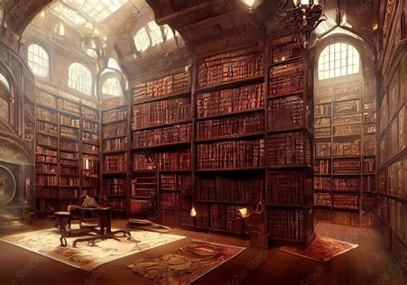

Die schwere Holztür knarrt leise, als du sie aufstösst. Der Geruch von altem Pergament und Kräutern lag in der Luft, vermischt mit dem schwachen Duft brennender Kerzen. Die Bibliothek von Finsterwacht war klein, aber für das abgelegene Dorf ein wahrer Schatz. Regale aus dunklem Eichenholz ragten bis zur Decke, gefüllt mit Büchern, die von längst vergessenen Zeiten erzählten. Als der Bibliothekar, ein alter Mann mit silbernem Bart, dich musterte. „Etwas Bestimmtes, Junge?“ fragte er mit krächzender Stimme.

Du gehst durch die hohen Eichenregale und stöbberst ein wenig in ein paar der Büchern. Nach einer weile hast du dir ein paar Bücher ausgesucht die du dir später wenn du genug Geld für eine Bibliotheksmitgliedschaft hast ausleihen möchtest.
Gehe zurück zum Dorfplatz